Антикризисный опыт
Вывожу проблемные проекты из убытка, возвращаю доверие ключевых клиентов и предсказуемый ритм разработки
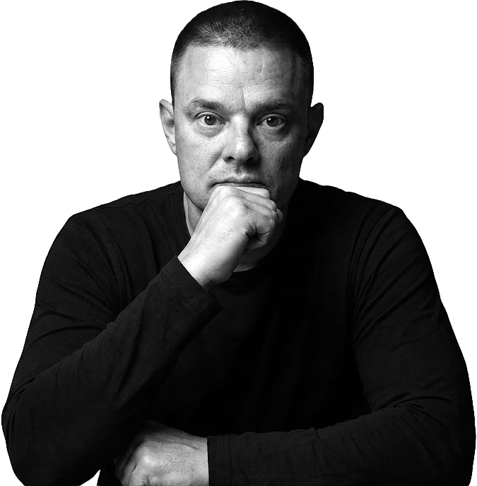
Более 10 лет в цифровых продуктах. Превращаю неопределённость в предсказуемый результат — от пресейла до антикризисного управления
Вывожу проблемные проекты из убытка, возвращаю доверие ключевых клиентов и предсказуемый ритм разработки
Контролирую финансовые показатели портфеля, максимизируя маржинальность и коммерческую отдачу
Трансформирую хаотичные процессы в понятную и прогнозируемую систему производства на базе Agile
Глубоко понимаю архитектуру ПО и системный анализ, принимаю взвешенные инженерные решения
Интегрирую ИИ в ежедневную практику: аналитика, дизайн, предпроектная подготовка и разработка
Lead Project Manager с 10‑летним бэкграундом в управлении распределёнными и инхаус‑командами разработки.
За рамками стандартного трекинга задач фокусируюсь на построении эффективной методологии производства (Scrum, Kanban, Waterfall) и запуске работающих регламентов, которые экономят время команды и деньги бизнеса.
Обладаю сильным опытом антикризисного управления: умею спасать «проблемные» проекты с горящими сроками, выравнивать общение с недовольными заказчиками и возвращать разработку в предсказуемое русло.
Имею хорошие переговорные навыки, умею аргументированно защищать границы проекта, сглаживать конфликты и находить win‑win решения в жёстких условиях.
В работе активно использую возможности ИИ для автоматизации рутины, анализа требований и генерации проектной документации, что позволяет кратно ускорять пресейлы и запуск новых продуктов.
Обнинский институт атомной энергетики — филиал НИЯУ «МИФИ», Кибернетика и вычислительная техника, 2007
Русский — родной · English — B2
Москва · amiga.ru · Информационные технологии, системная интеграция, интернет
Ульяновск · itech-group.ru · Информационные технологии, системная интеграция, интернет
Москва · Информационные технологии, системная интеграция, интернет
Калужская область · 4rome.ru · Информационные технологии, системная интеграция, интернет
Проект 1 из 14
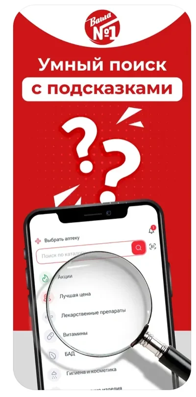
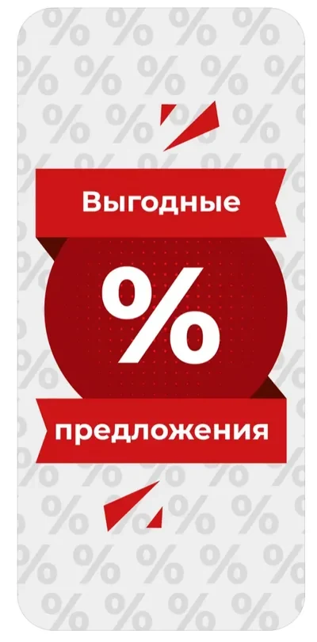
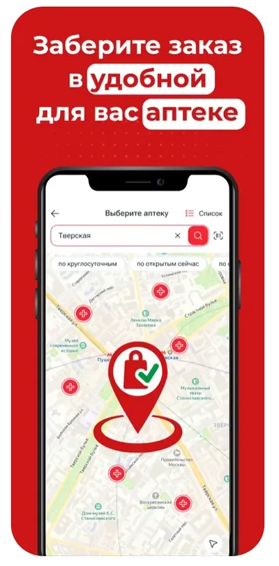
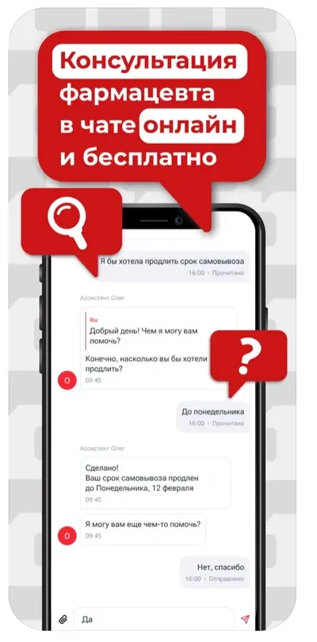
Разработал и запустил высоконагруженное мобильное приложение на Flutter для сети Аптек “Аптека Ваша №1” (доступно на google play, app store). В сети более 100 аптек в Москве и Санкт‑Петербурге. Приложение позволяет ознакомиться с ассортиментом продукции, акциями и специальными предложениям, сделать заказ лекарств в удобную аптеку.
Кейс на сайте агентства (откроется в новой вкладке)Команда профессионалов, имеют багаж опыта, который позволил реализовать все наши нестандартные задачи в приложении. Всегда на связи, при необходимости, могут объяснить «человеческим» языком технические аспекты по разработке. В моменте подключали дополнительные силы, чтобы сдать проект вовремя. После сдачи мобильного приложения, подключили команду к другим проектам и по сей день тесно сотрудничаем.
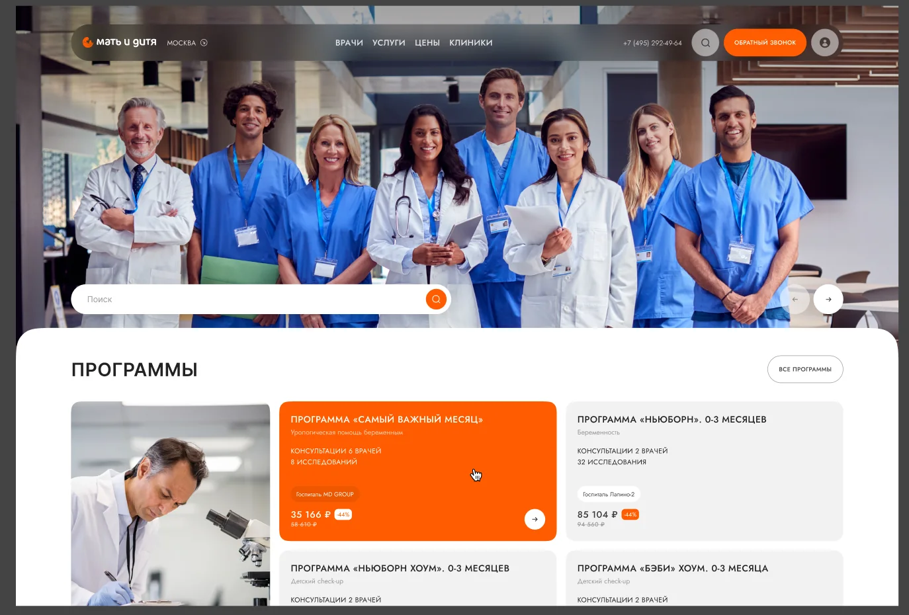
«Мать и дитя» — крупная сеть медицинских клиник с филиалами по всей России. Основной профиль клиники — сопровождение и ведение беременности.
Я вёл работы по поддержке высоконагруженного сайта на Битрикс. Сайт интегрирован с несколькими внешними системами. Помимо основных шаблонов страниц есть ряд небольших лендингов под конкретные услуги и направления, которые встроены в общее меню сайта.
Выполнен ряд объёмных задач и оптимизаций. Среди них отдельно стоит отметить редизайн главной страницы, каталога и календаря мероприятий, разработку конструктора лендингов, реорганизацию раздела вопросов и ответов с помощью ИИ.
Клиенты такого уровня накладывают жёсткие требования по качеству работ — для меня и команды это был отдельный вызов. За время работы нам удалось качественно прокачать регламенты отделов разработки и тестирования, собрать слаженную команду разработчиков. В результате чего кратно уменьшилось количество повторных доработок и багов по задачам. Также удалось сократить общее время доставки нового функционала в продакшен.
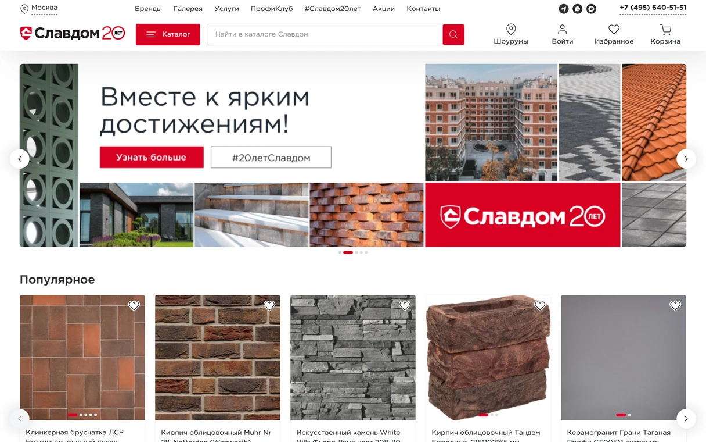
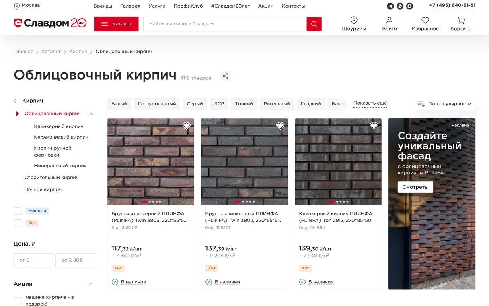
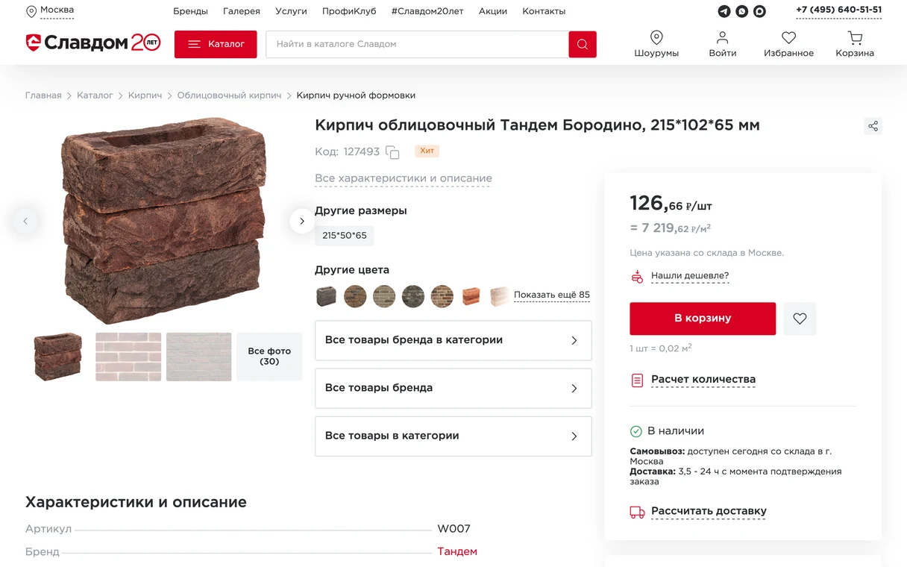
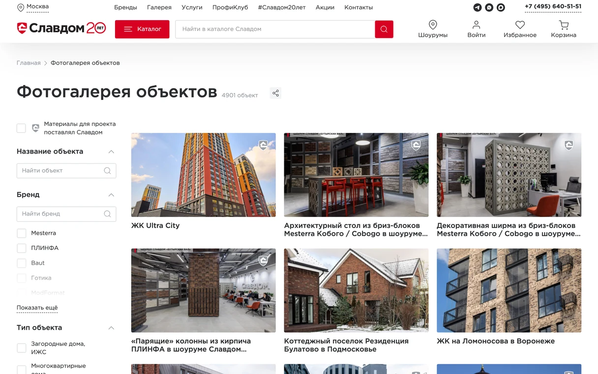
«Славдом» — крупная российская компания, продающая кирпич и другие строительные материалы более 20 лет. Основные филиалы в Санкт‑Петербурге, Москве и Краснодаре, доставка осуществляется по всей России.
Для клиента был проведён редизайн, а после этого полная переработка кодовой базы сайта. Отдельным блоком работ проведена серверная оптимизация.
Во время работ удалось существенно повысить стабильность и скорость работы сайта. По итогам оптимизации фронтенда и бэкенда скорость отдачи основных разделов вышла в зелёную зону PageSpeed для десктопной и мобильной версий, с учётом того, что после редизайна количество информации на страницах выросло в среднем на 40%. Кроме того, мы нашли и удалили вирус‑майнер на сервере, а также провели тонкий тюнинг самого сервера.
На проекте не обошлось без сложностей. Во время пресейла мы недооценили количество legacy в текущем коде, из‑за чего пришлось активно управлять рентабельностью на этапе реализации.
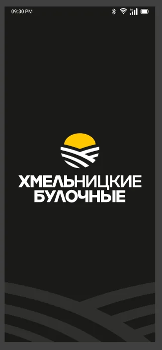
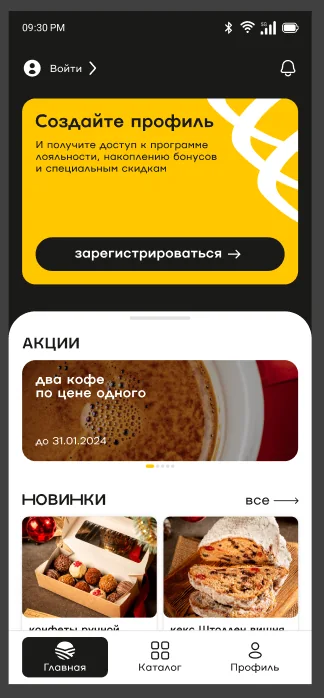
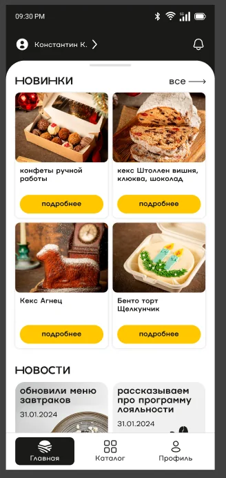
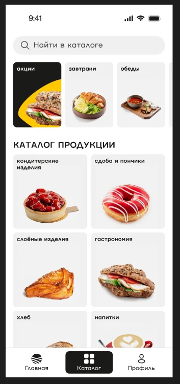
Разработал мобильное приложение на Flutter для сети кондитерских “Хлеб Хмельницкого” (доступно на google play, app store). Приложение позволяет ознакомиться с ассортиментом продукции и пользоваться гибкой системой лояльности.
В качестве бэкенда мобильного приложения мы использовали уже работающий сайт клиента на Битрикс, для обмена информацией был разработан API. Таким образом у клиента есть возможность централизованно управлять контентом в одном месте, выдача автоматически адаптируется под сайт и мобильное приложение.
Кейс на сайте агентства (откроется в новой вкладке)Из всего разнообразия подрядчиков мы выбрали Amiga, так как они занимали лидирующие позиции в рейтинге лучших мобильных разработчиков России в Рейтинге Рунета. Мы анализировали и связывались с другими компаниями, но решающим фактором в пользу Amiga послужило общение напрямую с командой. Мы быстро нашли общий язык, совместная работа переросла в качественное партнерство win‑win, а не остались в формате сухих отчетов.
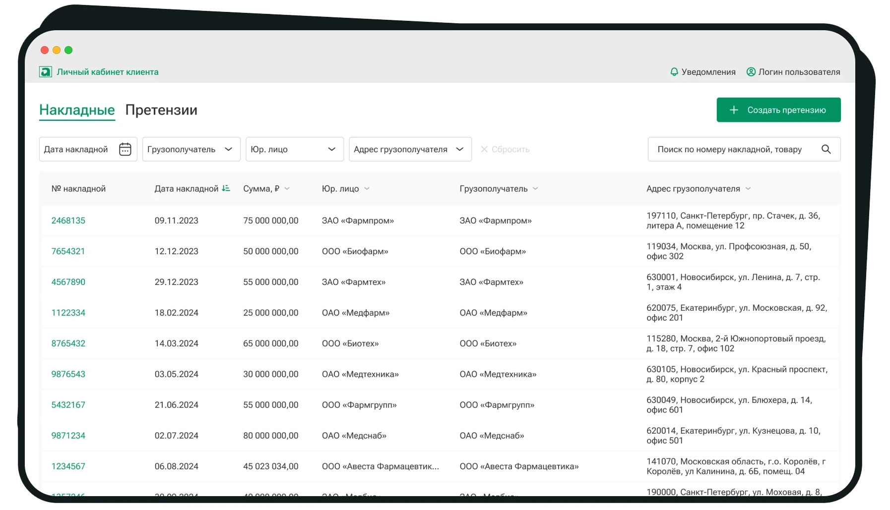
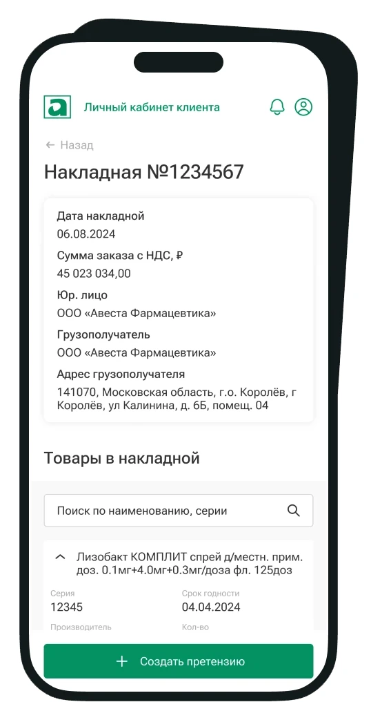
Запустил B2B‑сервис «Авеста» для аптечной сети «Аптека Ваша №1» (таблетка.ру) — это более 100 аптек в Москве и Санкт‑Петербурге.
Авеста решает конкретную проблему клиента: работа с претензиями от поставщиков. Ранее в случае любых проблем с поставками претензии собирали звонками: заявки терялись, сроки обработки никто не контролировал. Сервис собрал этот поток в одно окно.
В портале: накладные с составом поставки и возможностью скачать сертификаты и декларации, пошаговая подача претензии, список претензий со статусами и уведомления на каждом этапе обработки. Учтена сложная структура клиента — один аккаунт равен юридическому лицу, с многоуровневой работой сетей филиалов. Интерфейс адаптирован под телефон, т.к. владельцы и провизоры чаще всего работают с сервисом с мобильных устройств.
В итоге там, где на обработку заявок требовалось десять человек, справляется один. Скорость обработки претензий выросла, документооборот стал прозрачным — накладные и претензии лежат в одном месте. Сервис работает в боевом режиме.
Кейс на сайте агентства (откроется в новой вкладке)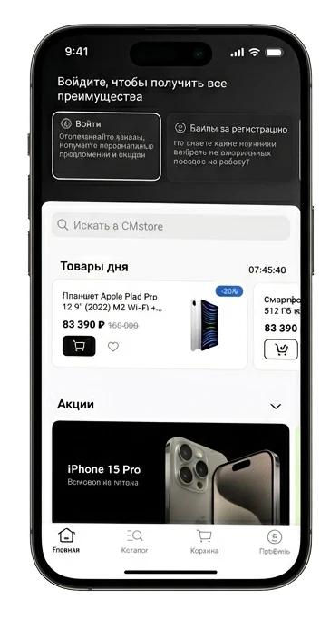
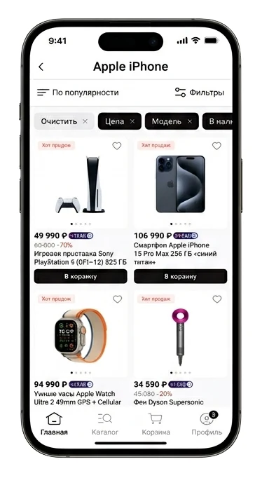
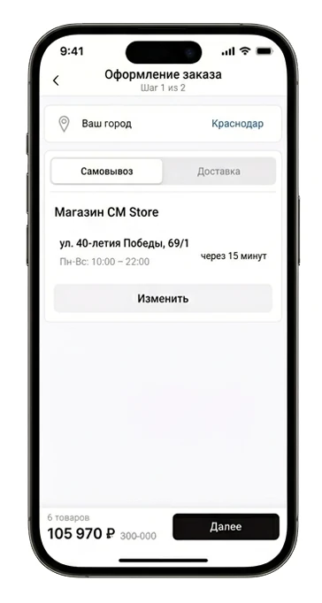
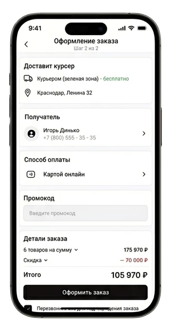
Разработал мобильное приложение для CMstore — сети салонов продаж цифровой техники с интернет-магазином и сервисным центром. Клиент хотел выпустить приложение в сжатые сроки и своими силами не справлялся, поэтому мы оперативно включились и помогли уложиться в график. Моей команде досталась Swift‑часть под iOS — довели её до релиза, приложение успешно вышло в App Store.
В приложении: регистрация по номеру телефона, профиль с историей заказов и избранным, оформление заказа в четыре шага, сравнение товаров по характеристикам, разделы акций и новостей, корзина с рекомендациями и push‑уведомления.
Помимо Swift‑разработки мы частично доработали действующий сайт на Битрикс: сделали личный кабинет и интегрировали умный поиск на Elasticsearch.
В качестве вызова на этом проекте команда была смешанной — часть специалистов нашего агентства, часть со стороны клиента. Я добился бесшовной интеграции клиентских разработчиков в наши процессы.
Кейс на сайте агентства (откроется в новой вкладке)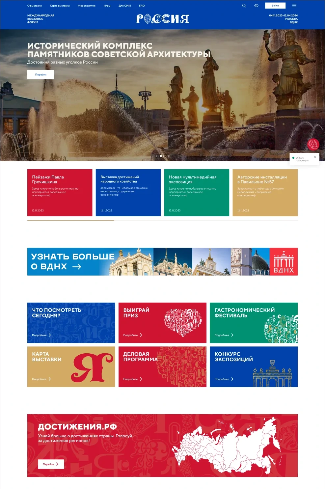
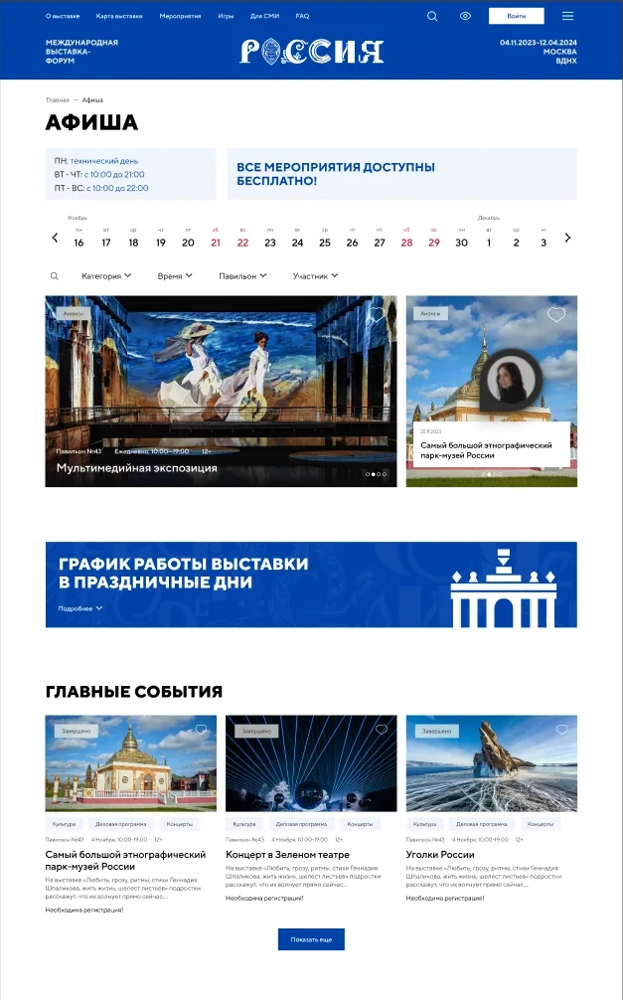
Вел работы по поддержке высоконагруженного сайта международной выставки-форума «Россия» russia.ru. С командой сделали редизайн сайта и закрыли ряд срочных задач, таких как запуск новых разделов и функционала, работы по безопасности и оптимизации.
Среди прочих работ разработан раздел Афиша, посетитель видит расписание предстоящих мероприятий, выбирает день в календаре и отбирает события по категории, времени, павильону и участнику.
Особое внимание на проекте было уделено безопасности и тестированию релизов. Т.к. для сайтов такого уровня необходимо обеспечивать 99,9% времени работоспособности.
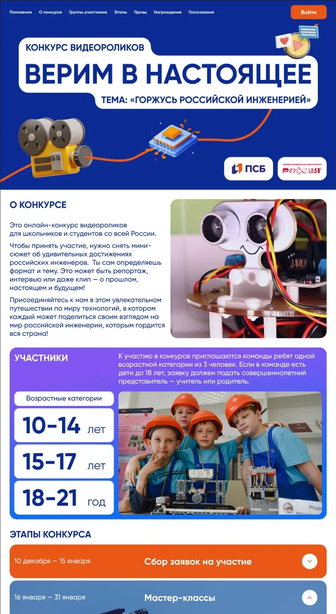
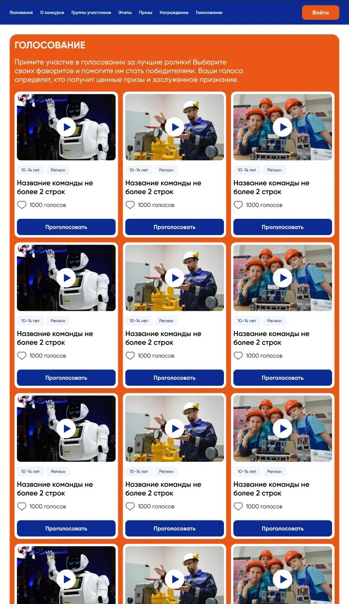
Для данного проекта срок был критично сжат: три недели от постановки задачи до продакшена, за это время мы с командой собрали и запустили готовый продукт. Часть работ удалось запустить параллельно.
Механика конкурса: команды участников в трёх возрастных категориях снимали и загружали ролики, жюри оценивало работы, победителей награждали финансовыми призами.
Для участников и жюри сделаны два отдельных личных кабинета. У каждой роли свой набор прав и свой сценарий: участник работает со своей заявкой, жюри — с распределёнными на него работами и формой оценки.
В качестве отдельного вызова на этом проекте во время выполнения несколько раз менялись условия при фиксированном сроке запуска конкурса.
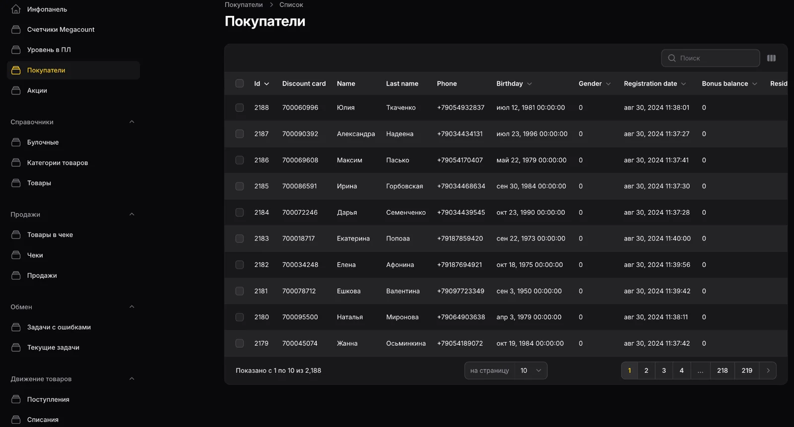
Спроектировали и реализовали для сети кондитерских отдельную систему со своей базой данных. Через несколько интеграций с учётными системами клиента она собирает и обрабатывает данные о покупках и покупателях, сводя разрозненные источники в одну базу данных.
Маркетолог получил инструмент для анализа, фильтрации и сегментирования клиентов, а также оценки популярности продуктов: видно, кто покупает, что покупают и как меняется спрос по позициям.
Эти данные позволили настроить систему лояльности и делать адресные предложения клиентам по группам, оптимизировать товарную сетку, оптимизировать производство продуктов.
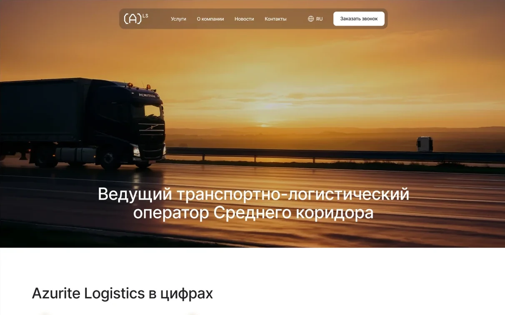
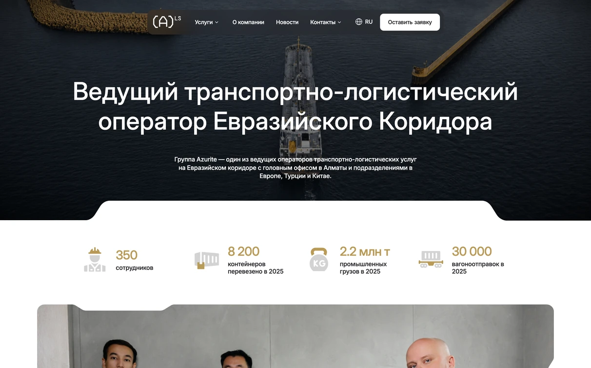
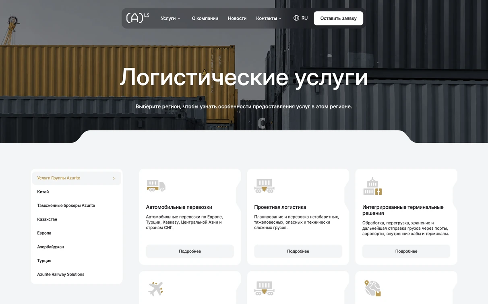
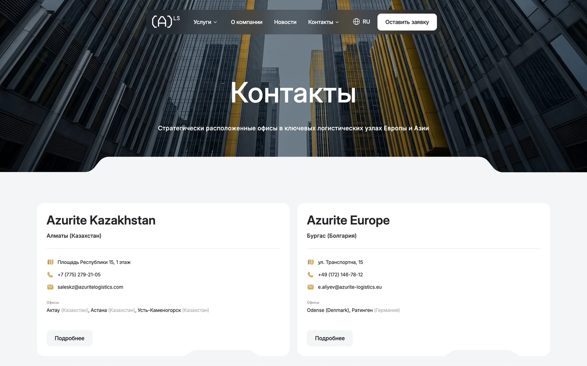
Разработал и запустил промо‑сайт логистической компании из Казахстана. Azurite Logistics — транспортно-логистический оператор с головным офисом в Алматы. В компании 350 сотрудников, 12 офисов в 8 странах, собственный парк вагонов, контейнеров и грузовиков.
На сайте реализована витрина услуг компании: мультимодальные, железнодорожные, автомобильные, авиа и морские перевозки, проектная логистика, таможенное оформление, лизинг подвижного состава. Рядом блок «Azurite в цифрах», карта офисов, новости и формы обратной связи.
Реализована мультиязычность, мы смотрим язык браузера пользователя и автоматически подменяем контент. Языковых версий пять: русская, английская, казахская, турецкая и китайская.
В разработке активно применялись технологии ИИ, в частности бэкенд полностью реализован с помощью вайб‑кодинга.
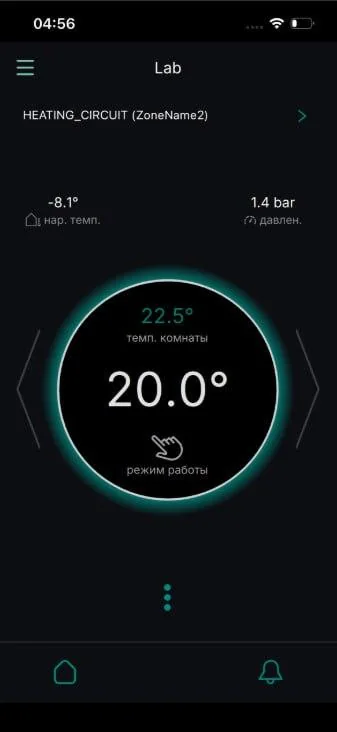
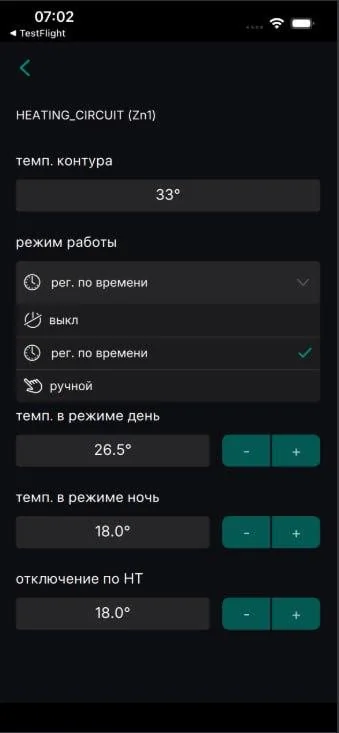
vLink — мобильное приложение для управления газовыми котлами: пользователь задаёт температуру отопительного контура, переключает режимы работы и видит текущие показания оборудования.
Приложение было разработано на редком для мобильной разработки стеке: Qt и Java, поэтому вход в проект начинался с разбора чужого кода и особенностей платформы.
По заявкам клиента выполнен ряд доработок функционала. Параллельно восстановлена работоспособность некоторых функций и обновлены библиотеки Qt.
Отдельным блоком работ прошла глубокая оптимизация: серверная часть, бэкенд и фронтенд приложения.
В результате работ мы добились стабильной и быстрой работы приложения. Исправлены архитектурные проблемы, серверная часть выдерживает кратно большую нагрузку и свободно обрабатывает большее количество одновременных пользователей.
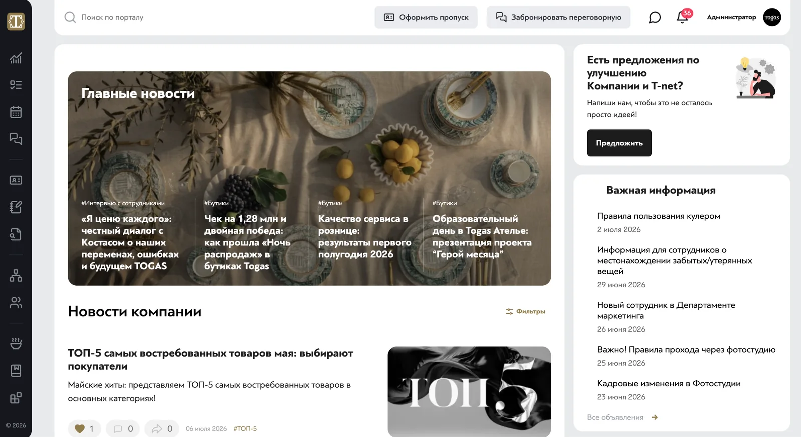
Поддержка и развитие корпоративного портала Togas Group. Выполнен широкий спектр задач поддержки: от оптимизации и ускорения инфраструктуры до нового функционала для сотрудников.
Ключевая разработка — дашборды успеваемости сотрудников на базе интеграции с 1С. Сотрудник видит свои текущие результаты в разных разрезах и сравнивает их с предыдущими периодами. Функционал реализован для четырёх главных ролей, у каждой свой набор показателей.
Также реализован игровой функционал для поощрения дизайнеров компании. Есть цели, выполняя которые дизайнер заполняет шкалу достижений на год, а итог выполнения заданий влияет на финансовые поощрения.
Помимо этого доработаны интеграции с 1С заказчика и закрыт пул доработок внутреннего таск‑трекера.
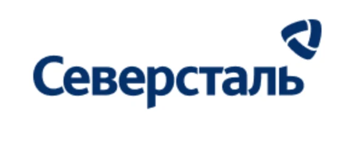
Вел разработку системы согласования заявок и документов, основанную на смарт процессах Битрикс 24. Система позволяет запустить процесс согласования заявок и документов, автоматически выставить задачи всем вовлеченным участникам в зависимости от сценария, отправляет уведомления с помощью роботов по мере движения заявки по этапам согласования. Система накапливает статистику по процессам для последующей аналитики.
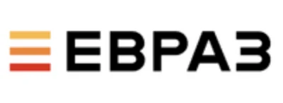
Разработал и ввел в эксплуатацию одну из частей пропускной системы на Битрикс. Разработанный функционал позволяет водителям из специального списка подрядных организаций в автоматическом режиме запрашивать и получать допуск на площадки предприятия. Заявка проходит согласование в нескольких системах после чего водитель получает пропуск с QR кодом на email и Telegram для заезда на территорию.
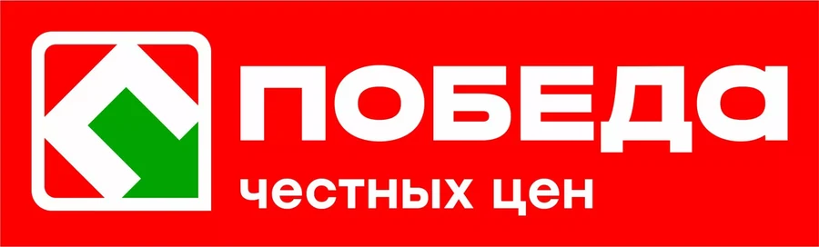
Вел разработку HR портала на Битрикс24 для компании “Победа”. Штат компании насчитывает более 1500 сотрудников. Портал позволил им решать такие задачи как: согласование отпусков, больничных, переработок, получение справочной информации, информации о событиях компании, о структуре компании, обучение, общение с коллегами.
Пожалуйста, напишите мне, буду рад любым полезным контактам.